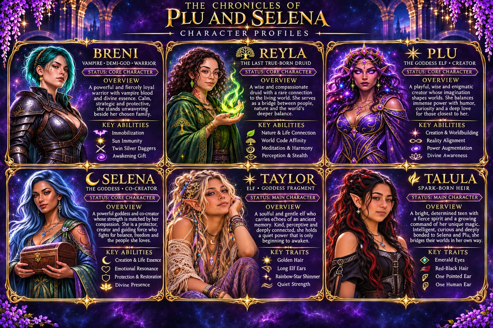

Elf Blood
The mystery begins in a separated world.
Explore Book One
THE OFFICIAL BOOK SERIES · JONATHAN M. REED
One fractured world. Two creators. A thousand lives bound together.
Discover the story ↓WELCOME TO THE CHRONICLES
When an elf with no memory of her past makes a home with a fiercely loyal vampire, their quiet life seems far removed from the powers that shaped the world. But an unexpected arrival, a human agent's investigation and strange pulses of magic begin to disturb a reality that was never meant to be whole.
Across the trilogy, Elf Blood, The World Before and The Goddess Elf trace the mystery from its first fractures to the choices that will determine the world's future. The companion stories follow the people who live on in its aftermath and the quieter moments that hold their family together.

BEGIN HERE · THE ORIGINAL TRILOGY
Read the main story in order. Each book reveals another part of the world and the lives intertwined within it.
The mystery begins in a separated world.
Explore Book One
Discover the ancient choices behind the fracture.
Explore Book Two
Follow the story as the separated destinies converge.
Explore Book ThreeEXPLORE THE UNIVERSE
THE COMPLETE BOOKSHELF
Browse the trilogy, stories that continue afterward and other companion adventures. Post-trilogy books may reveal major plot details.
Store availability and formats vary by country. Only retailer listings identified for the specific book are shown; additional platforms will be added when confirmed.
THE PUBLICATION CALENDAR
Dates below reflect retailer listings checked in November 2026 or the author's in-progress status. Publication plans can change; unconfirmed dates are intentionally left open.
LETTERS FROM THE CHRONICLES
Be the first to hear about new editions, release dates, chapter previews and community news.
The subscription form is being prepared. No email address will be collected until secure email delivery and unsubscribe handling are connected.
Planned: optional book news only · unsubscribe anytime.THE READER COMMONS
A home for conversations, theories, character favourites and questions about the worlds of Plu and Selena. Discussions will open once the community platform and moderation are ready.
Introduce yourself, choose your next book, and discuss the series without revealing major twists.
Discussion space in preparationShare lore theories, timelines, questions and discoveries. A dedicated spoiler label will keep surprises protected.
Discussion space in preparationTalk about Plu, Selena, Breni, Reyla, Taylor, Talula and the characters who shape their lives.
Discussion space in preparationBe respectful, mark spoilers, avoid harassment or personal information, and keep discussions focused on the stories. Posting will only be enabled when moderation is configured.

THE PEOPLE OF THE CHRONICLES
Explore profiles for the principal cast and significant people from the companion stories. Major revelations stay hidden until spoilers are enabled.
A LIVING ARCHIVE
Discover cultures, places and the powers that shape the universe.
No entries match your search.
THROUGH THE AGES
The public timeline shows only broad eras. Reveal spoilers to explore more.
BONDS THAT SHAPE THE WORLD
Explore relationships across the trilogy. Select two illustrated portraits or use the character menus. Major revelations remain hidden until you turn on spoilers.
Choose two characters to discover their relationship.
THE CREATOR'S DESK
The official world hub for the trilogy, companion adventures, characters and evolving lore of The Chronicles of Plu and Selena.
Written by Jonathan M. Reed.
Explore the library